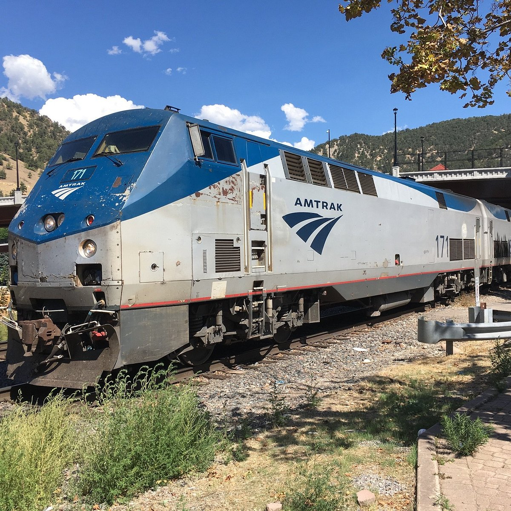

California Zephyr
Operating since 1949, the California Zephyr is celebrated for its breathtaking journey from Chicago to San Francisco, traversing some of the most spectacular landscapes in the United States. As it winds through the Rocky Mountains, Sierra Nevada, and deserts, passengers enjoy unmatched views of rugged terrain, snow-capped peaks, and vibrant forests. This train captures the spirit of American travel, inviting passengers to witness natural beauty and historic towns along its path. It remains a popular choice for those seeking a scenic, leisurely journey across the diverse terrains of the American West.
Characteristics
- Length: 250 meters
- Speed: Up to 130 km/h
- Year of Release: 2000
- Seating Capacity: 1000 passengers
- Route: Delhi to Mumbai